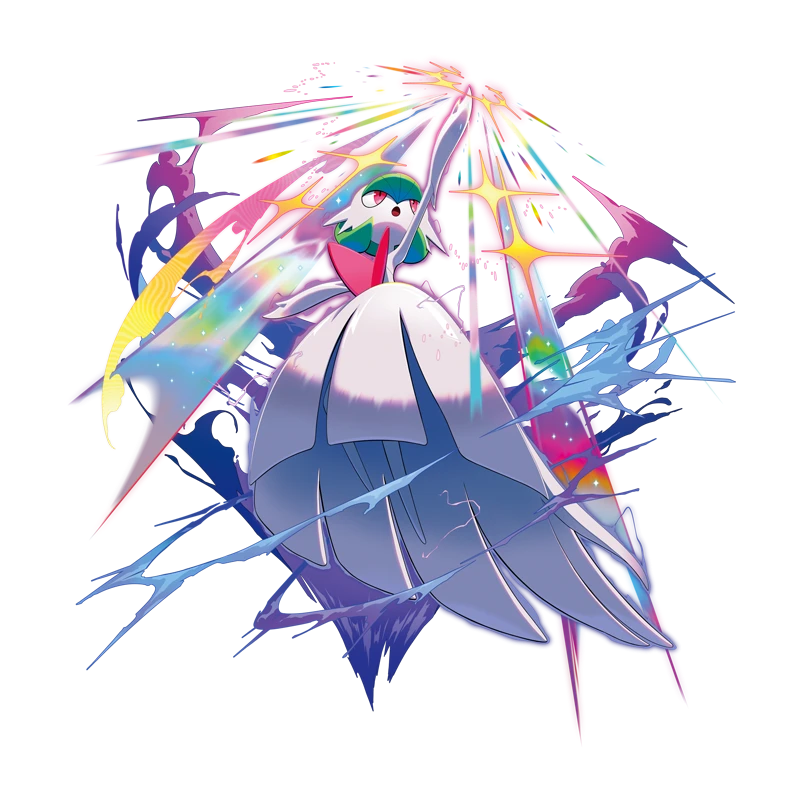
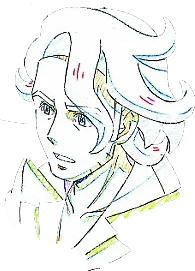
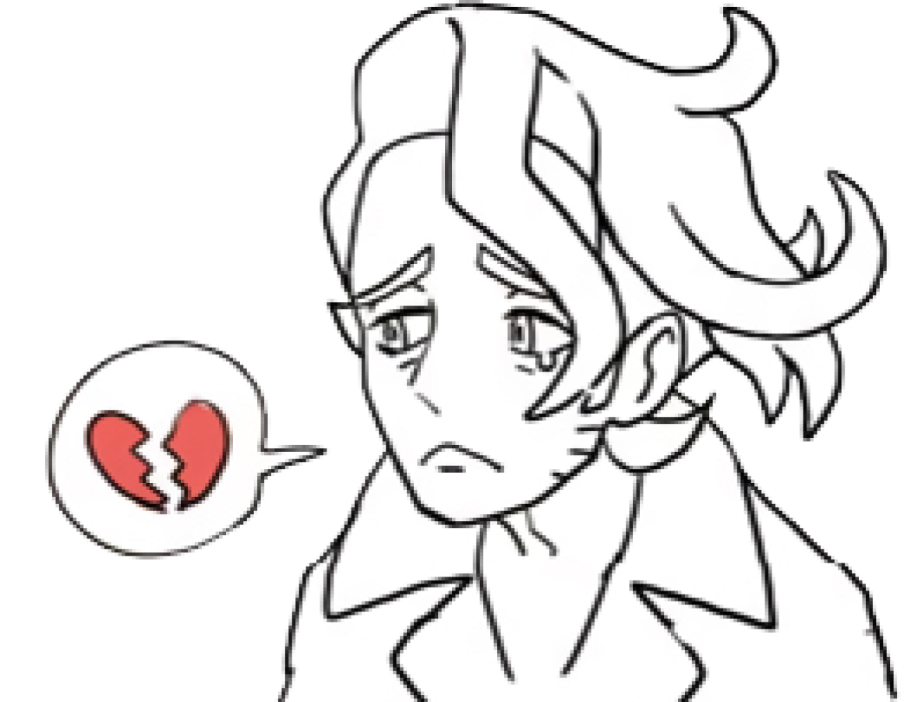
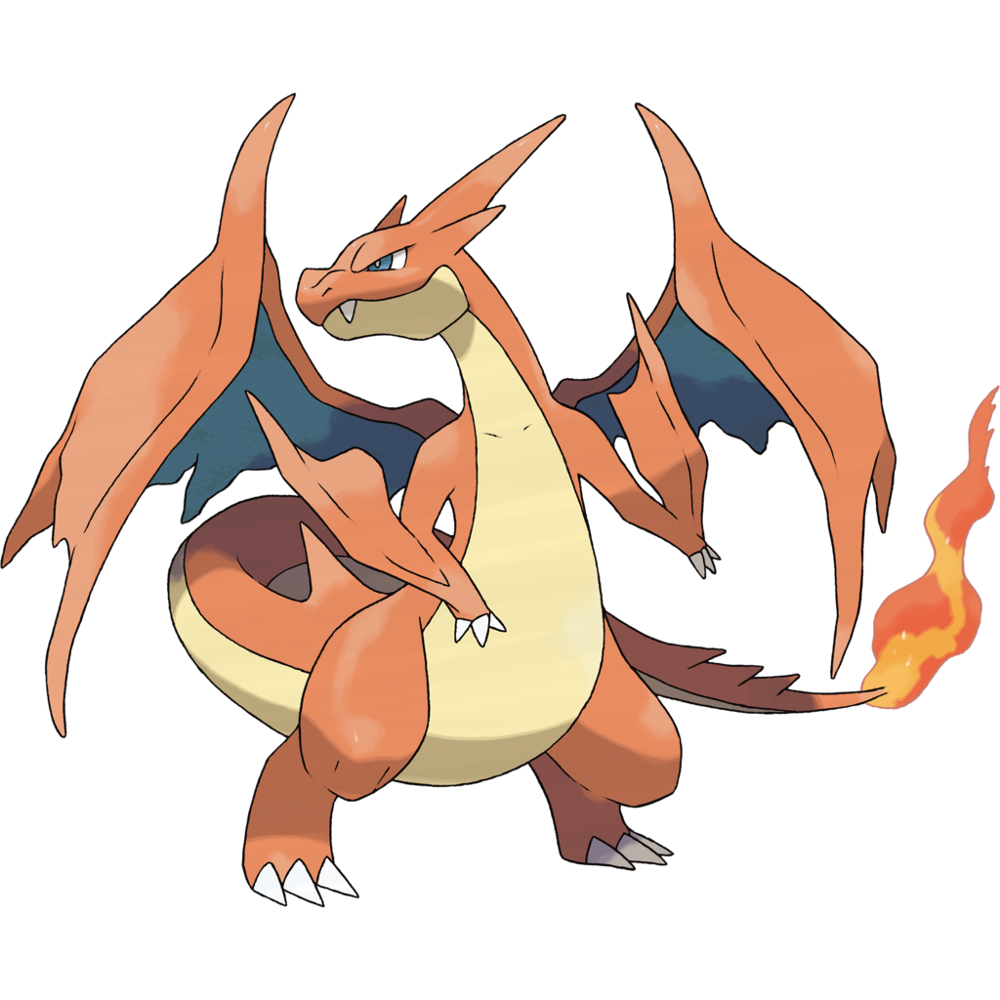

 Pokémon XY introduced mega evolution to the franchise officially in its 2013 release. Mega evolution at the time, while a battle mechanic, wasn't just that: it was a emblematic of the game's central philosophy in a tangible way. Mega evolution represented the human-Pokémon bond, a literal surpassing of physical limitations, through something very beautiful, bonds. Professor Augustine Sycamore, Kalos' passionate Pokémon Professor, championed this discovery with enthusiasm. He gifted the player mega stones, and celebrated what he called a Pokémon's ability to evolve beyond eovlution.
This vision aligned seamlessly with XY's broarder themes. They are games steeped in romance, beauty, and a kind of fairy-tale wonder... it's no coincidence that these games are also the games to introduce the fairy-type! From the French-inspired elegance to Kalos to the fairy types that symbolize grace and emotional depth, Pokémon XY painted a world where love and connection could achieve the impossible, could break past barriers, could exceed limitations. Mega evolution stood as living proof of this philosophy... until it didn't.
In Pokémon XY's initial presentation, mega eovlution embodied everything the games celebrated about human-Pokémon relationships. The legends of a Lucario and a trainer whose bond was so profound that it allowed its Pokémon to surpass its natural limitations 3,000 years ago during the Kalos war. It wasn't about sacrifice or suffering... it was about two beings achieving a perfect unity, a unity of purpose and heart. Professor Sycamore compliments this narrative. He approached mega eovlution with a genuine scientific wonder and enthusiasm. His decision to gift the player character mega stones early in their journey wasn't reckless, it was an act of faith about positive bonds. Professor Sycamore fundamentally believed that understanding and nurturing connections between humans and Pokémon would lead to beautiful, positive discoveries. This characterization means even more when contrasted with Lysandre, his former colleague turned antagonist. Lysandre persued his vision of a beautiful world through control, violence, and annihilation. He was willing to destroy Pokémon and humans alike to achieve a twisted perfect world because he did not believe that connection could overcome the despair to come. He, as someone who championed connections and bonds, saw the future and feared that love was not enough.
 Professor Sycamore represents the opposite. He believed in growth in nurturing, discovery through curiousity, beauty achieved in harmony, and the fundamental goodness that lies in the hearts of all. Professor Sycamore chooses to believe in goodness and love. It is no coincidence that the first Pokémon he is seen with is Skiddo, whose line has been some of the first Pokémon living alongside humans. The fundamental divide between these characters established Sycamore as firmly anti-violence, someone who would never knowingly promote soemthing that caused pain to Pokémon.
Pokémon XY's intergration of mega evolution with its fairy type further reinforced this: several mega evolution gain a fairy typing, emphasizing grace and emotional bonds over brute force. Mega Gardevoir and Mega Mawile shows a shift to connection, Eevee gains a new evolution on kindness and affection, Floette's love is a defining factor of XY's story, and the broader introduction of fairy types challenge the dominace of dragons... a type typically associated with raw power, with a type that represents emotional bonds.
Thematic coherance begins to fracture with later media, particularly Pokémon Sun and Moon games' pokédex entries. Where Pokémon XY's mega evolution descriptions focus on power enhancement and mental focus, SM/USUM introduced disturbing details about the cost of such power. Here are some examples:
Mega Glalie: "The power of Mega Evolution was so strong that it smashed Glalie’s jaw. Its inability to eat very well leaves Glalie irritated."
Mega Salamence: "Mega Evolution fuels its brutality, and it may even turn on the Trainer who raised it. It’s been dubbed “the blood-soaked crescent.”"
Mega Sharpedo: "The yellow patterns it bears are old scars. The energy from Mega Evolution runs through them, causing it sharp pain and suffering."
This fundamentally alters mega evolution's nature from a loving bond to sacrifical suffering. Rather than representing a pinnacle of harmony, it becomes a painful ordeal that Pokémon must endure 'out of love' for the trainer. This reframing at first glance may appear to add emotional depth, but it actually flattens the original concept's complexity. One of themost damaging aspect of this shift is how it retroactively undermines Professor Sycamore's characterization and motivations. In the Pokémon XY, his enthusiasm for mega evolution reads as genuine excitement of somebody discovering something beautiful and beneficial. His eagerness to share this discovery with young trainers reflects his fundamental belief in positive growth through bonds.
However... when viewed through the lens of later media's painting of mega evolution, this changes. His actions become very strange. Would a character established as opposed to violence and suffering, someone who disavowed Lysandre's harmful vision, really encourage children to engage in a practice that breaks Pokémon's bones and drives them to madness? He becomes inconsistent at best and hypocritical at worst.
Pokémon Masters EX attempts to address this inconsistency by having Professor Sycamore acknowledge the harm and dedicate his research to finding mega evolution's negative effects... and while this does show an appropriate character growth for him, it also highlights the fundamental problem: the Sycamore who would research ways to eliminate suffering from mega evolution is the same character who, logically, never would have promoted it so enthusiastically if he had known about that suffering from the beginning.
Beyond that, the reframing of mega evolution also udnermines Pokémon XY's central themes of the power of love, bonds, connections, and peace. The games present a romantic vision(not in terms of human relationships but romantic in the literary sense of idealism, wonder, and the triumph of emotion over cynicism), and mega evolution served as the proof that this worldview was literally true within the Pokémon universe.
By making mega evolution inherently harmful, later media transforms this proof into cruelty. Instead of bonds transcending limitations, we have bonds that require enduring suffering. Instead of love achieving the impossible, we have love demanding sacrifice. The fairy tale becomes a cautionary tale, and XY's optimistic philosophy is reframed to be naive, rather than aspirational. Isn't that sad? It represents a core misunderstanding of what made Pokémon XY's approach to mega evolution compelling. The original concept wasn't simplistic because it lacked pain. It was sophisticated because it proposed that genuine connection and understanding could achieve something wonderful and strong and lovely without requiring suffering. That's a way more radical message than 'love means pain'. A common thing I hear in the defense of the post-Pokémon XY reframing of mega evolution is that adding consequences and suffering makes the concept more 'mature' and 'realistiic'. This, I believe, shows a shallow understanding of narrative depth. Pain and suffering do not automatically create meaning or maturity. They must serve the story's themes and the character's development. In mega evolution's case, the added suffering actively works against the established themes of the game... Pokémon XY used mega evolution to argue that loving bonds could achieve amazing results. The later addition of arbitrary pain doesn't deepen this, it contradicts this. The result isn't an increase in sophistication but themtic confusion and character inconsistency.
 Moreover, the specific nature of suffering, that being broken bones and suffering and madness and attacking trainers, seems designed primarily for shock value rather than a meaningful exploration of human-Pokémon relationships. If the creators wanted to add complexity to mega evolvution, they could have xplored concepts like the discipline required to maintian such deep bonds, the vulnerability that comes with trust, the responsibility that comes with great power, or the ways that growth can require leaving comfort zones... instead, they chose physical and mental suffering that serves no purpose beyond creating arbitrary stakes. Pokémon XY proposed that love and understanding could literally work miracles, while later media insists that power requires suffering, that transcendence requires sacrifice. This is a fundamental shift in philosophy. This doesn't just effect mega evolution as a concept, it also damages the charaters. Professor Sycamore's original enthusiasm seems ignorant or callous, neither of whcih fits his established charater. Perhaps more tragically, this change eliminates something genuinely beautiful from the Pokémon world: as originally conceived, it offered players a glimpse of what harmony betwen human and Pokémon might look like. It showed the central message of friendship and bonds wasn't just feel-good fluff but a literal truth that could break barriers.
Mega evolution wasn't naive... it was hopeful. It wasn't simplistic, it was aspirational. And it wasn't unrealistic within the context of a world where emotions have tangible power. By replacing this wonderful and hopeful message with pain and suffering, depth wasn't added to mega evolution, it was drained of what made it special. In analzying the Pokémon XY games, and Professor Sycamore, we need to remember as he was originally written: a researcher whose enthusiasm for mega evolution reflected his fundamental belief in the power of love. Later reframings may have complicated this, but it can't erase the original vision... a vision of a world where love could truly evolve beyond evolution, with nobody having to break their jaw in the process.
This trend of injecting harm into mega evolution is made worse. We return to the Kalos region with a focus on Lumiose City's urban redevelopment. Pre-release trailers and official reveals introduce 'rogue mega evolution', a phenonemon where wild Pokemon mega evolve spontanously without bond or mega stone. They are transformed into aggressive and uncontrollable threats that pursue and attack people. Players must battle these Pokemon, collect 'mega energy' orbs, and enable their own Pokemon's mega evolution to fight back. Mega evolution is now a volatile, citywide hazard that requires containment. This shows a kind of urban control over natural wonder that clashes entirely with the Kalos' initial harmonious ideals. Perhaps this was the intention?
However, new forms in ZA further show a shift towards grotesque pain. Mega Victreebel, one of the first newly revealed mega evolutions, swells massively. It overproduces acid so potent that it must wrap its own vines around its throat to prevent overflow, essentially self-strangling to avoid vomiting poison uncontrollably. This turns what could of been a loving evolution to a long-underrated Pokemon into another symbol of pain. The emphasis on aggression and distress suggests more narrative where mega evolution is a curse as much as it is a gift. In a game centered on Kalos, Lumiose City, this escalation takes Professor Sycamore's loved discovery, his most hopeful ideal, and forces it to become a precursor to widespread danger. His life's work has become the source of a crisis that now requires armed intervention and containment protocols. A man who believed in love and bonds and peaceful discovery is unwittingly the cause of chaos, pain, and fear. The XY games suggested love and understanding could transcend suffering, pain, and even the natural law. ZA shows us that this is a dangerous delusion that threatens civilized society. It isn't just inconsistency... it's thematic cynacism that cuts through the original games hopeful vision.
I hope to revisit this when Legends ZA officially releases in October.